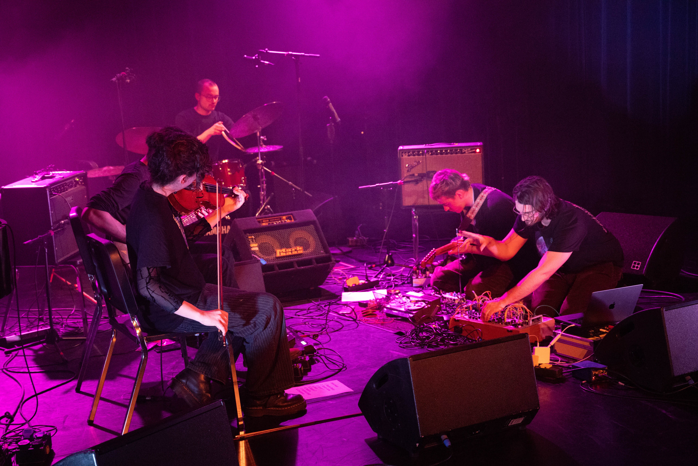
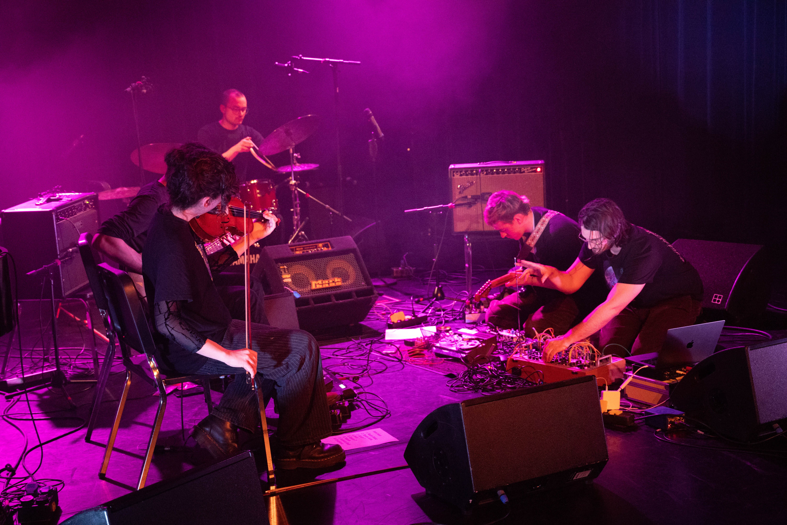

what is left, what there grows (2025)
Finalist at MA/IN Matera Intermedia Festival 2025.
“what is left, what there grows” is a self-reactive environment composed of sound, immersive multi-channel audio (4–8 channels), upcycled trash speakers, small robots, and obsolete or broken technological remains—motherboards, wires, machine parts. Although over 90% of the installation is built from discarded or recycled materials, the experience it offers is one of vitality, regeneration, and ongoing transformation—whether driven by internal desire or external intervention.
The installation evokes a kind of natural ritual in which the Anthropocene compresses geological eras, accelerating fossil formation through human waste. Decades of technological residue converge, reshaping sound, air, shadow, and perception, exposing a fractured sense of detachment from our consumer responsibilities.
This is a fragile, eroded, yet vibrant environment in constant flux. All elements—robots, sound structures, speakers—listen and respond to one another; the system is entirely audio-reactive, including its interaction with the audience. The presence of living, reactive technology gives the impression of stepping into a sacred terrain, made of a new kind of nature—where even stepping over a cable or past a tiny machine feels intrusive.
The installation sustains a delicate balance. It no longer needs the human, and barely welcomes them—except as careful listener, as silent observer.
Media: Video (Drive)


 
